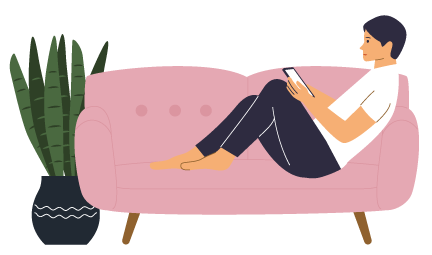
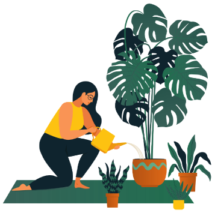

글. 김민경 당근정신건강의학과 원장
요즘 들어 자신이 스트레스를 받고 있다는 사실조차 인식하지 못하는 이들이 점차 늘고 있습니다. 지나친 압박감에 내 삶에서 주도권을 잃은 느낌이 듭니다. 부모님이나 선생님, 혹은 주위 사람들이 해내야 한다고 하는 일들을 쫓아 따라가다 보면 어느 순간 지치고 힘듭니다. 쳇바퀴 같은 힘든 일상을 마치고 귀가하면 아무런 에너지가 남아 있지 않아 자신도 모르게 자극적인 활동을 통해 스트레스를 풀게 됩니다. 여러분도 어느 순간 도파민을 쫓아가는 악순환에 빠져들고 있지 않나요?
흔히 도파민 추구 활동이라고 부르는 습관인데요. 달고 자극적인 음식을
짧은 시간 내에 먹어치우거나, 술을 마시거나, 게임에 빠져드는 것, 인터넷
라이브 방송을 시청하며 꼭 필요하지 않은 물건을 무심결에 사들이는 행동
등입니다. 이들의 공통점은 단시간 내에 기분이 좋아지고, 너무나 쉽게
빠져든다는 것이며, 반복하고 나서 심한 자책감과 후회가 몰려든다는
것입니다. 그래서 이런 스트레스 해소법을 자기 파괴적 방법이라고
부르기도 합니다.
또 하나의 공통점은 무척이나 수동적인 행동들이라는 것인데요, 자발성이
끼어들 틈이 없습니다. 핸드폰 화면 속에서 식욕을 자극하는 맛있는
음식들을 클릭해서 주문하기만 하면 쉽게 문 앞까지 배달이 됩니다. 맥주나
소주는 몇 잔만 들이켜도 알딸딸해지며 긴장이 풀리는 듯합니다. 라이브
방송에서는 달콤한 말들로 필요치도 않은 물건의 구매를 권합니다. 지금
당장 물건을 가지면 행복해질 거 같습니다. 스트레스가 넘쳐나는 일상에서
이 정도쯤이야 나를 위한 선물이라는 생각이 듭니다.
이런 행동들은 습관의 고리를 만들고, 점차 중독 행동으로 빠져들게
됩니다. 모두가 수동적인 소비 행동입니다. 이런 고리를 끊는 아주 손쉬운
방법이 우선 스스로 뭔가를 만들어보는 것입니다. 배달음식을 시키는 대신
식재료를 사서 요리를 하거나, 라이브 방송에서 물건을 사들이는 대신
무언가를 만들어보는 것입니다. 실제로 상담 현장에서도 보면 요리를
시작하거나 목공, 뜨개질을 시작하며 일상을 유지하는 분들의 정신건강이
훨씬 빠르게 좋아집니다. 이유는 뭘까요? 바로 내 삶의 주도권을 찾는
느낌이 들기 때문입니다.
❶ 스트레스로 인한 도파민 추구 행동 파악하기
자신에게 해가 되는줄 알면서도 반복하는 도파민 추구 행동을 우선
파악해 보세요. 열심히 일하고 스트레스를 받은 만큼 보상이
필요하다고 느끼는 순간이 있나요? 스트레스와 행동이 어떤 고리를
형성하는지 살펴보세요.
스트레스를 받은 순간
예) 늦게까지 야근을 했다
도파민 추구 행동
예) 배달 음식 시켜 먹기, 술 마시기, 게임, 도박, 유튜브 시청

❷ 도파민 추구 행동 멈추기
배달 음식을 매번 시켜 먹는 습관이 있다면 주로 사용하는
어플리케이션을 폰에서 지웁니다. 눈에 보이지 않도록 해서 행동을
줄여나가세요. 미리 먹을 식사를 정해둡니다. 매번 자기 전에 술을
마셨다면 집에 술을 두지 마세요. 술을 마시는 횟수도 주말에만, 혹은
월 1회 이렇게 정해둡니다.
❸ 스트레스 요인 없애기
무리해서 일하고 과도한 스트레스를 받은 후 ‘나에겐 보상이 필요해’
라고 생각하는 패턴이 있는지 살펴보세요. 과도한 일정이 되지 않도록
일을 나눠서 하고 스트레스가 되는 요인들을 알아보고 없애보세요.
❹ 긍정적이면서 삶의 주도권을 가져올 수 있는 습관 만들기
어떤 부분에 흥미를 느끼고 좋아하는지 알아보려면 우선 시작해야
합니다. 머릿속에 떠오르는 게 있나요? 뜨개질, 목공, 옷 만들기,
요리. 뭐든지 좋습니다. 우선 시작해봅니다.
❺ 하려면 제대로 해야 한다는 생각이 든다면?
누구와 비교하지 마세요, 최고가 될 필요가 없습니다. 건강한 루틴을
만들어 나가기 정도로 목표를 가져보세요.
❻ 식사 만들기와 정리정돈
당장 잘할 수 있는게 없고, 아무것도 시작할 수 없다고 느낀다면
당장의 식사나 정리 정돈을 해보세요. 내가 먹을 음식을 간단하게
만들고 정성스럽게 그릇에 담아 자신에게 대접합니다. 환기를 하고
이불을 정돈하는 활동을 통해 작은 성취감을 쌓아가보세요.
❼ 긍정순환을 위한 활동 리스트 만들기
간단하게 할 수 있는 리스트를 만들어 해낸 것을 동그라미 쳐보세요,
하지 못한 것에 대한 아쉬움이나 질책 대신 ‘오늘은 해냈다’에 초점을
두고 격려하는 겁니다.
예) 화초에 물 주기, 요리 만들기, 종이에 간단한 스케치해 보기, 뜨개질 하기, 목공으로 만들어보기
❽ 몰입하는 즐거운 활동 정하기
여러 가지 활동 중에서 특히 몰입이 잘되고 즐거운 것이 있다면
반복해서 해보고 작은 성취감을 쌓아가보세요. 활동이 늘어감에 따라
사람들과 결과물을 나누고 공유해 볼 수도 있습니다.

우리나라나 일본, 유럽 등에서 노인들이 장인 정신으로 한 가지 일에
몰두하는 모습을 종종 볼 수 있습니다. 이는 일본의 ‘모노즈쿠리’라는
말로 불리기도 하는데요, 누군가 정성을 다해 몰두하는 모습은 보는 이로
하여금 같이 숭고한 에너지를 느끼게 합니다.
소비자에서 생산자로 바뀌는 내적 경험은 우리를 더 행복하고 활기차게
만들어줍니다. 결국, 삶을 바꾸는 힘은 거창한 목표가 아니라 오늘 내가
주도적으로 선택한 그 작은 열정에서 시작됩니다. 그리고 바로 그 열정이
내 삶의 주도권을 회복하게 만듭니다.
내 손으로 나의 삶을 짓는 오늘의 이 작은 몰입이 내일의 큰 기쁨이
되고, 그 순간순간이 모여 인생의 작품을 완성해 갑니다. 그렇게 한
걸음씩 나만의 세상을 만들어갈 때 우리는 어느새 더 단단하고 빛나는
자신을 만나게 될 겁니다.